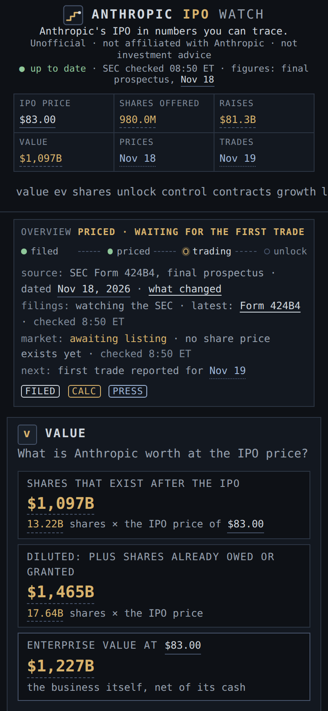
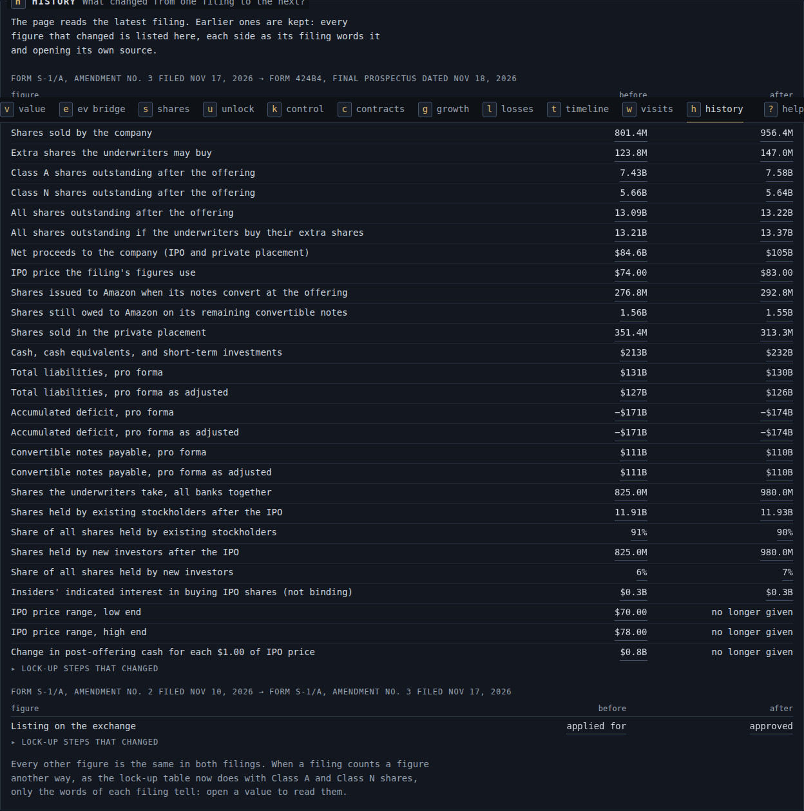
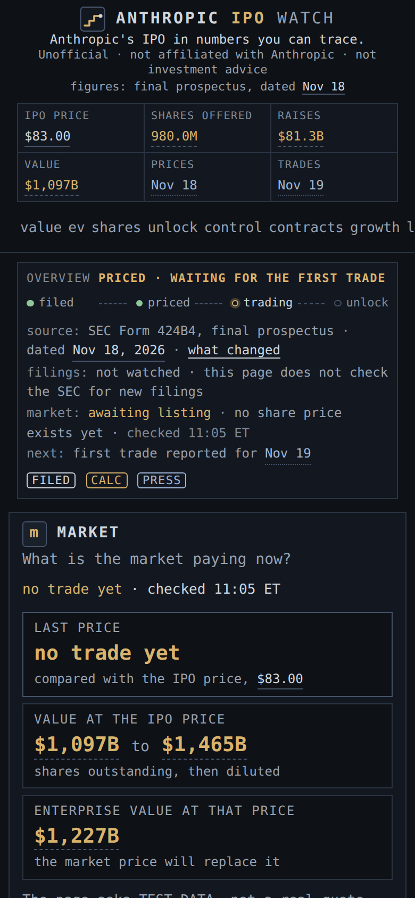

Loop 009 — Priced at $83, the final prospectus, the first trade
2026-11-18 and 19 · The IPO price from the press, then the final prospectus as the page's filing; a placeholder price caught on the listing morning; the market panel before the first trade. Versions 0.9.0 to 0.10.2.
Why
I saw a Wealthsimple notification in Canada that the price was 83 USD. … Yes, go. … Put all of that online.
The owner's words, reworded in English. This loop had no mission file; its report says so.
What changed


- The price from the press (AP, opened and quoted), then from the final prospectus (Form 424B4, dated Nov 18, filed Nov 19), read in full by the same extractor. The page computes at $83 only; the range lives in HISTORY (D-037).
- A placeholder caught: on the listing morning Yahoo Finance gave $83.00 with no volume; the page showed it as a last quote. A price now counts only once shares trade (0.10.1).
- The market panel before the first trade, at the owner's request (0.10.2).

Checks
| Check | Result | Evidence |
|---|---|---|
| Unit tests, consistency checks | passed | 150 tests; 159 checks on the final prospectus. |
| Real-browser tests, local and live | passed | 14 and 14. |
| CI | passed | Green from 0.9.1; 0.9.0 deployed on the owner's go during an Ubuntu mirror outage. |